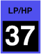

FILTER mode
These select one of six modes for Filter A or B. Usually, this should be set to one of the “lowpass” modes, which pass frequencies below the filter tuning, emphasize frequencies around the tuning, and attenuate frequencies above the tuning. The “bandpass” modes attenuate frequencies below and above the filter tuning, and the “highpass” modes attenuate frequences below the filter tuning and pass frequences above it. The four-pole, or “4p” modes attenuate more than the two-pole, or “2p” modes.
Toolkit
These are contained in the Filter tune clusters within the Filter section.
Chroma panel
This is contained in the CUTOFF section of the right panel, under the following parameter number:
|  |
These appear in the display as Filter Mode.
MIDI
These are accessed via the following NRPNs:
| A | 1,54 | |
| B | 2,54 |
Values
| MIDI | display | ||
| 0 | 2p lowpass | (default) | |
| 1 | 4p lowpass | ||
| 2 | 2p bandpass | ||
| 3 | 4p bandpass | ||
| 4 | 2p highpass | ||
| 5 | 4p highpass |